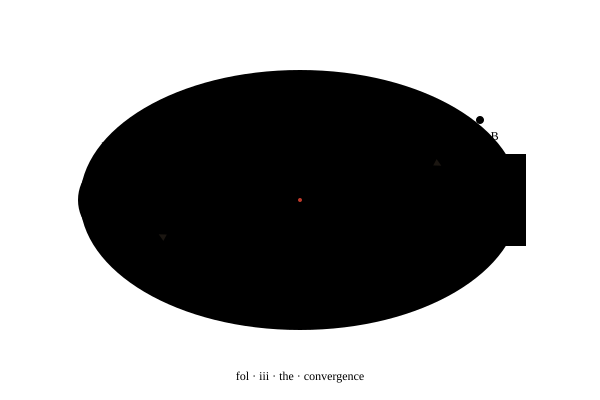

Reliable AI workflows for teams that ship.
Babysitter wraps any coding agent in convergent loops and cryptographic proof. You define what done means. The gates enforce it. The seal proves it.

No developer ships code by approving their own PR.
Why should an agent certify its own completion? Babysitter separates the doer from the verifier. Every task passes through the gate before it passes into your history.
Without a keeper
- Results vary run to run. The same prompt, a new answer, a worse answer.
- Quality degrades the longer the agent runs unsupervised.
- “Almost done” stays almost done — the final 10% is the whole problem.
- Confidence without evidence. The agent says it’s done. No one verifies it.
With Babysitter
- Tasks converge. The loop iterates until every gate reports passed.
- Quality holds. Gates are explicit, versioned, and re-run every iteration.
- Done means done. No verdict without a struck seal.
- Cryptographic proof accompanies every merged PR.
Pick your leash length.
Same agents. Same gates. Four registers — from step-by-step review to a daemon that converges forever.
Step-by-step. You review each gate. Ideal for high-stakes changes.
Write the plan. Then dispatch. The plan itself becomes a gate.
Full autonomy within hard gates. You get the verdict and the proof.
A daemon. Converges continuously. The agent never sleeps.
The gate opens once. The seal is struck once.
Four stations between intent and merge. Every station is a gate — lint, test, audit, seal. Convergence is the only exit.
Dispatch the task
You describe the outcome in plain English. Babysitter routes it to the agent of your choice under the mode of your choice.
Run the gates
Lint, tests, security audit, custom gates. Each one versioned. Each one mandatory. Each one rerun on every iteration.
Converge
If any gate reports failed, the loop plans a revision and tries again. Up to N iterations, configurable per process.
Strike the seal
A cryptographic proof-of-done is emitted and attached to the PR. The record is now complete, and auditable.

The recipes are more valuable than the kitchen. AI models change. Proven workflows don’t.— yaniv · ceo · co-founder, a5c.ai
vii
·
·
·
Done means done.
Five minutes to install. Zero telemetry. Open source, MIT-licensed, agent-agnostic.